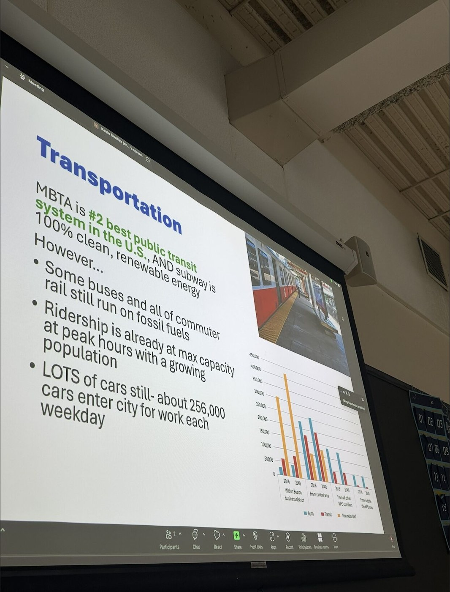

Program leadership
Program Director: Dr. Sowmya Balachandran.
Instructor: Elinor Hanjian.
UPCD High School Program · Summer 2026
The Summer 2026 program is structured as an academic foundation followed by professional internships with the City of Boston Streets Cabinet and community partners.
Program Director: Dr. Sowmya Balachandran.
Instructor: Elinor Hanjian.
Classroom modules: June 29 to July 9, Monday through Thursday.
Internship phase: July 13 to August 5, Monday through Thursday.
Learning model: mini-lectures, interactive activities, field observation, group discussion, and a Planner's Eye portfolio.
Students learn to observe, interpret, and propose improvements to their communities.
Students map daily life and examine how planning shapes everyday places.
Students identify strengths, challenges, and opportunities.
Students conduct walkability and mobility observations.
Students explore housing types, affordability, and neighborhood change.
Students examine trees, flooding, heat, parks, and environmental justice.
Students learn why planners listen and how input shapes decisions.
Students combine photos, observations, surveys, interviews, and maps.
Students turn observations into mini planning recommendations.

Each student builds a digital portfolio with original photographs, weekly reflections, community observations, maps or sketches, interview summaries, internship highlights, and planning recommendations.